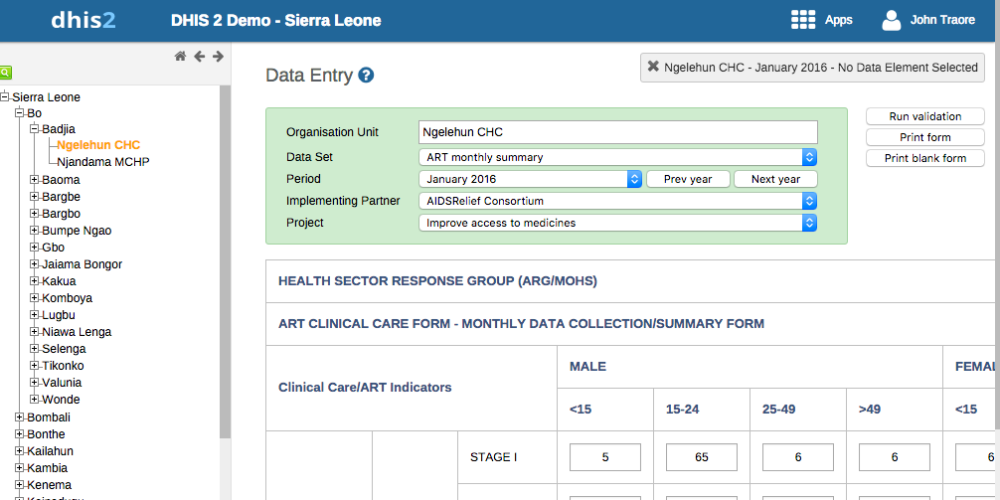

Table of Contents
- 10.1. Manage categories
- 10.1.1. About categories
- 10.1.2. Workflow
- 10.1.3. Create a category option
- 10.1.4. Create a category
- 10.1.5. Create a category combination
- 10.1.6. Create a category option group
- 10.1.7. Create a category option group set
- 10.1.8. Use category combinations for data sets
- 10.1.9. Assign a code to a category option combination
- 10.1.10. Edit metadata objects
- 10.1.11. Clone metadata objects
- 10.1.12. Change sharing settings for metadata objects
- 10.1.13. Delete metadata objects
- 10.1.14. Display details of metadata objects
- 10.1.15. Translate metadata objects
- 10.2. Manage data elements
- 10.2.1. About data elements
- 10.2.2. Workflow
- 10.2.3. Create a data element
- 10.2.4. Create a data element group
- 10.2.5. Create a data element group set
- 10.2.6. Edit data elements and other objects
- 10.2.7. Clone data elements and other objects
- 10.2.8. Change sharing settings for data elements and other objects
- 10.2.9. Delete data elements and other objects
- 10.2.10. Display details of data elements and other objects
- 10.2.11. Translate data elements and other objects
- 10.3. Manage data sets and data entry forms
- 10.3.1. About data sets and data entry forms
- 10.3.2. Workflow
- 10.3.3. Create a data set
- 10.3.4. Edit data sets
- 10.3.5. Clone data sets
- 10.3.6. Change sharing settings for data sets
- 10.3.7. Delete data sets and forms
- 10.3.8. Display details of data sets
- 10.3.9. Translate data sets
- 10.3.10. Override data elements' category combinations in a data set
- 10.3.11. Edit compulsory data elements in a data set
- 10.3.12. Download default data forms in PDF format
- 10.3.13. Manage section forms
- 10.3.14. Manage custom forms
- 10.4. Manage indicators
- 10.4.1. About indicators
- 10.4.2. Workflow
- 10.4.3. Create an indicator type
- 10.4.4. Create an indicator
- 10.4.5. Create an indicator group
- 10.4.6. Create an indicator group set
- 10.4.7. Edit indicators and other objects
- 10.4.8. Clone indicators and other objects
- 10.4.9. Change sharing settings for indicators and other objects
- 10.4.10. Delete indicators and other objects
- 10.5. Manage organisation units
- 10.5.1. About organisation units
- 10.5.2. Workflow
- 10.5.3. Create an organisation unit
- 10.5.4. Create an organisation unit group
- 10.5.5. Create an organisation unit group set
- 10.5.6. Edit organisation units and other objects
- 10.5.7. Clone organisation units and other objects
- 10.5.8. Change sharing settings for organisation unit groups and group sets
- 10.5.9. Delete organisation units and other objects
- 10.5.10. Display details of organisation units and other objects
- 10.5.11. Translate organisation units and other objects
- 10.5.12. Assign names to organisation unit levels
- 10.5.13. Move organisation units within a hierarchy
- 10.6. Manage program metadata
- 10.6.1. About program metadata
- 10.6.2. Create a tracked entity attribute
- 10.6.3. Create a tracked entity attribute group
- 10.6.4. Create a relationship type
- 10.6.5. Create a tracked entity
- 10.6.6. Edit metadata objects
- 10.6.7. Clone metadata objects
- 10.6.8. Delete metadata objects
- 10.6.9. Change sharing settings for metadata objects
- 10.6.10. Display details of metadata objects
- 10.6.11. Translate metadata objects
- 10.7. Manage attributes
- 10.8. Manage constants
- 10.9. Manage option sets
- 10.10. Manage legends
- 10.10.1. About legends
- 10.10.2. Create a legend
- 10.10.3. Edit metadata objects
- 10.10.4. Clone metadata objects
- 10.10.5. Change sharing settings for metadata objects
- 10.10.6. Delete metadata objects
- 10.10.7. Display details of metadata objects
- 10.10.8. Translate metadata objects
- 10.10.9. Assign a legend to indicator or data element
- 10.11. Manage predictors
- 10.12. Manage push reports
- 10.13. Manage external map layers
- 10.14. Edit multiple object groups at once
Categories are typically a concept, for example "Gender", "Age" or "Disease Status". Data elements such as "Number of cases of confirmed malaria" are often broken into smaller component parts to determine, for example, the number of confirmed malaria cases of particular age groups.
Use categories to disaggregate data elements into individual components. You can also use categories to assign metadata attributes to all data recorded in a specific dataset, such as "Implementing partner" or "Funding agency."
Example 10.1. Three age categories
Create three categories: "Under 1", "1-5" and "Over 5". Assign them as categories to the data element. This creates three separate fields for this data in the data entry forms:
Number of confirmed malaria cases (Under 1)
Number of confirmed malaria cases (1-5)
Number of confirmed malaria cases (Over 5)
Without categories, you would have had to create each of the data elements listed above separately.
In the Maintenance app, you manage the following and category objects:
Table 10.1. Category objects in the Maintenance app
|
Object type |
Available functions |
|---|---|
|
Category option |
Create, edit, clone, share, delete, show details and translate |
|
Category |
Create, edit, clone, share, delete, show details and translate |
|
Category combination |
Create, edit, clone, share, delete, show details and translate |
|
Category option combination |
Edit and show details |
|
Category option group |
Create, edit, clone, share, delete, show details and translate |
|
Category option group set |
Create, edit, clone, share, delete, show details and translate |
Create all category options.
Create categories composed by the multiple category options you've created.
Create category combinations composed by either one or multiple categories.
Create data elements and assign them to a category combination.
When possible, recycle category options. For instance, there might be two categories which might share a particular category option (for example <1 year of age). When creating the categories, this category option could be reused. This is important if particular category options (or category option combinations) that need to be analyzed together.
Open the Maintenance app and click Category > Category option.
Click the add button.
Fill in the form:
Name
Short name
Start date
End date
Select organisation units and assign them.
![[Tip]](resources/images/admon/tip.png)
Tip You can automatically select all organisation units that belong to an organisation unit level or organisation unit group, for example "Chiefdom" or "Urban. To do this:
Select an Organisation unit level or Organisation unit group and click Select.
Click Save.
When you have created all category options for a particular category, you can create that category.
To create a category:
Open the Maintenance app and click Category > Category.
Click the add button.
Fill in the form:
Name
Code
Data dimension type
A category either be of type "Disaggregation" or "Attribute". For disaggregation of data elements, you select Disaggregation. The data dimension type "Attribute" allows the category to be used to assign a combination of categories to data recorded through a data set.
Data dimension
If you select Data dimension, the category will be available to the analytics as another dimension, in addition to the standard dimensions of "Period" and "Organisation unit".
Select category options and assign them.
Click Save.
Category combinations lets you combine multiple categories into a related set.
Example 10.2. Category combination
You can disaggregate the data element "Number of new HIV infections" into the following categories:
HIV Service: "Other", "PMTCT", "TB"
Gender: "Male", "Female"
In this example, there are two levels of disaggregation that consist of two separate data element categories. Each data element category consist of several data element category options.
In DHIS2, different data elements are disaggregated according to a common set of categories. By combining these different categories into a category combination and assigning these combinations to data elements, you can apply the appropriate disaggregation levels quickly to a large number of data elements.
Open the Maintenance app and click Category > Category combination.
Click the add button.
Fill in the form:
Name
Code
Data dimension type
Skip category total in reports
Select categories and assign them.
Click Save.
You can group and classify category options by using category option groups. The main purpose of the category option group set is to add more dimensionality to your captured data for analysis in for example the Pivot table or Data Visualizer apps.
Example 10.3. Category options groups and group sets
In a system, data is collected by "projects", where projects is modeled as category options. The system must be able to analyse data based on which donor that supports the project. In this case, create a category option group set called "Donor". Each donor can be created as a category option group, where each category option / project is put in the appropriate group. In the data analysis applications, the "Donor" group set will appear as a data dimension, while each donor appear as dimension items, ready to be included in reports.
To create a category option group:
Open the Maintenance app and click Category > Category option group.
Click the add button.
Fill in the form:
Name
Short name: Define a short name for the data element.
Code
Data dimension type
Select Category options and assign them.
Click Save.
You can group category option groups in category option group sets. The main purpose of the category option group set is to add more dimensionality to your captured data for analysis in for example the Pivot table or Data Visualizer apps.
To create a category option group set:
Open the Maintenance app and click Category > Category option group set.
Click the add button.
Fill in the form:
Name
Description
Data dimension
Data dimension type
Select Category option groups and assign them.
Click Save.
When categories and category combinations have the data dimension type "Attribute", they can apply a common set of attributes to a related set of data values contained in a data set. When category combinations are used as a attribute, they serve as another dimension (similar to "Period" and "Organisation unit") which you can use in your analysis.
Example 10.4. Use category combination for a data set
Suppose that a NGO is providing ART services in a given facility. They would need to report each month on the "ART monthly summary", which would contain a number of data elements. The NGO and project could potentially change over time. In order to attribute data to a given NGO and project at any point in time, you need to record this information with each data value at the time of data entry.
Create two categories with the data dimension type "Attribute": "Implementing partner" and "Projects".
Create a category combination with the data dimension type "Attribute": "Implementing partners and projects".
Assign the categories you've created to the category combination.
Create a data set called "ART monthly summary" and select the "Implementing partners and projects" category combination.
When you enter data in the Data entry app, you can select an "Implementing partner" and a "Project". Each recorded data value, is assigned a specific combination of these categories as an attribute. These attributes (when specified as a dimension) can be used in the analysis applications similar to other dimensions, for example the period and organisation unit.
|  |
You can assign a code to category option combinations. This makes data exchange between DHIS2 and external systems easier. The system creates the category option combinations automatically.
Open the Maintenance app and click Category > Category option combination.
In the list, find the object you want to modify.
Click the options menu and select Edit.
Enter a code.
Click Save.
Open the Maintenance app and find the type of metadata object you want to edit.
In the object list, click the options menu and select Edit.
Modify the options you want.
Click Save.
Open the Maintenance app and find the type of metadata object you want to clone.
In the object list, click the options menu and select Clone.
Modify the options you want.
Click Save.
Open the Maintenance app and find the type of metadata object you want to modify.
In the object list, click the options menu and select Sharing settings.
(Optional) Search for a user group and select it. The user group is added to the list.
Change the settings for the user groups you want to modify.
Can view: Everyone in the user group can view the object
Can edit: Everyone in the user group can view and edit the object
The default setting is that everyone (Public access) can view and edit objects.
Click Close.
Open the Maintenance app and find the type of metadata object you want to delete.
In the object list, click the options menu and select Delete.
Click Confirm.
Open the Maintenance app and find the type of metadata object you want to view.
In the object list, click the options menu and select Show details.